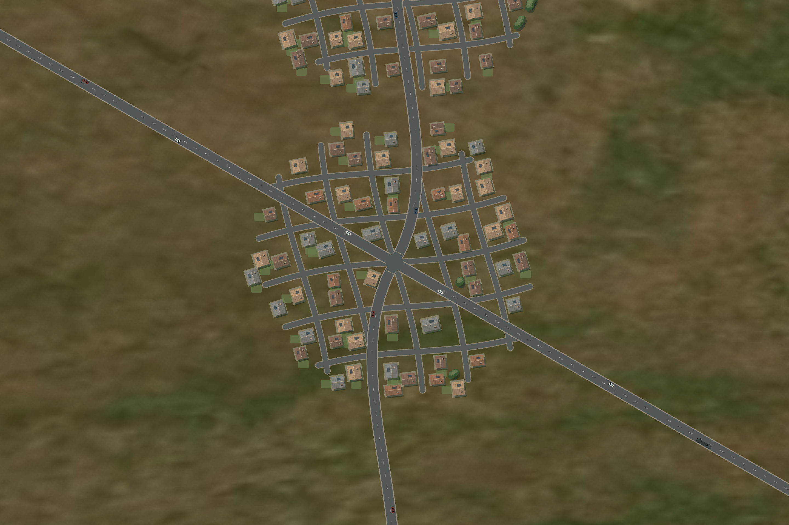

Roleplay Nations · Implemented Organic renderer
The working map, up close.
Actual renderer captures with NASA ground textures, procedural cities and proportionate vehicles.

Roofs, roof seams, glazing and vehicles drawn as vector geometry. Captured at 2× display resolution. Click to inspect the full image.